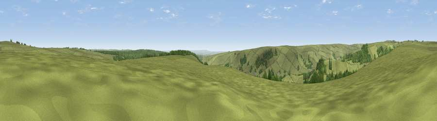

Viewpoint near Rosedale Abbey
#19324 in England · top 48% of its area beats it · near Rosedale AbbeyWhere it is
The exact computed spot (SE 73425 97225). Click the marker for map links.
The view, rendered

A 360° render of this exact spot computed from the terrain model, tree cover and land cover — summer colours, afternoon light, calibrated against photographs of famous viewpoints. Real trees, hedges and buildings will differ in detail.
The panorama
Grey silhouette: terrain skyline in each direction (720 bearings, Earth curvature and refraction included). Dashed green: skyline with trees (+15 m) and buildings (+8 m) as obstacles. Blue strip: how far the ground is visible on each bearing.
Where the view opens
Wedge length = distance to the farthest visible ground on that bearing (vegetation-aware). Rings at 10, 25 and 50 km.
What fills the view
87% grassland · 12% woodland · 1% cropland
Angular shares of the visible panorama (visual magnitude), not map area. Landscape diversity 0.19 (0–1 Shannon).
Key numbers
More beautiful places nearby
The staircase of upgrades: each row has a higher view potential than everything closer. Driving times are estimates from straight-line distance, calibrated against real road routing — check an actual route before setting out.
| Place | Direction | Drive | Score |
|---|---|---|---|
| Viewpoint near Rosedale Abbey | NNW · 1 km | ~4 min | 54.6 |
| Viewpoint near Rosedale Abbey | N · 2 km | ~6 min | 61.3 |
| Ana Cross | SSW · 4 km | ~8 min | 65.9 |
| Peat Hill | N · 5 km | ~10 min | 72.5 |
| Viewpoint near Gillamoor | SW · 10 km | ~19 min | 72.8 |
| Danby Beacon | N · 12 km | ~22 min | 73.4 |
| Viewpoint near Ingleby Greenhow | WNW · 14 km | ~25 min | 75.6 |
| Viewpoint near Eskdaleside | ENE · 14 km | ~26 min | 78.4 |
54.36526, -0.87145 · source: screening · position refined by local search. Computed location — check access rights before visiting.